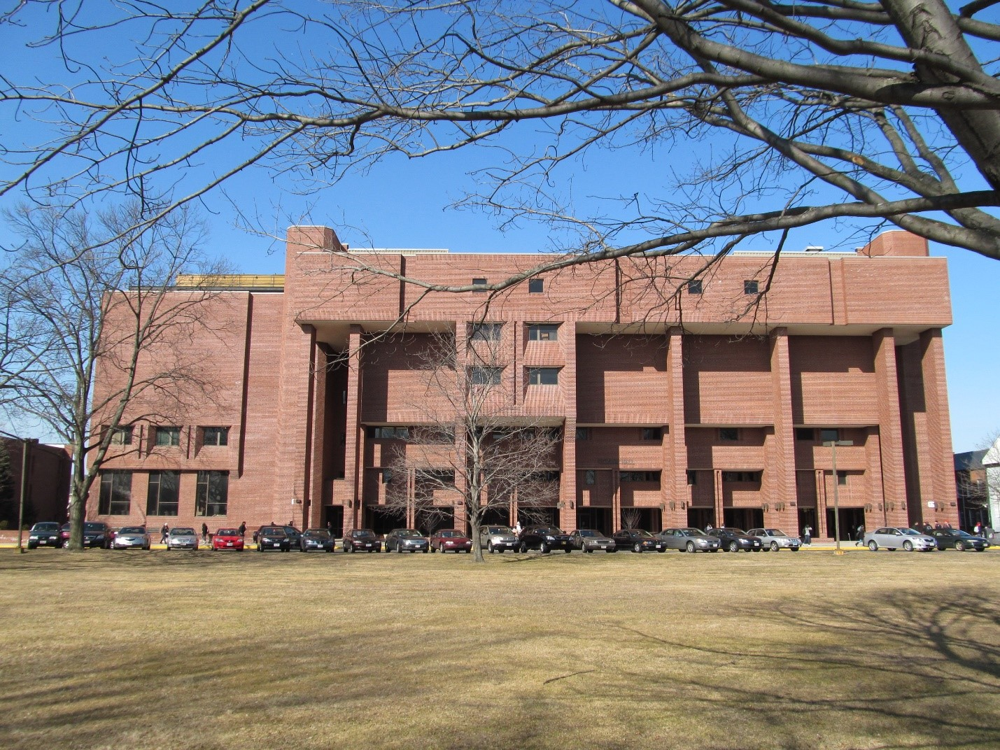

My Story
I was born in Santo Domingo, the capital of the Dominican Republic.

I was born in Santo Domingo, the capital of the Dominican Republic.
My family wasn’t rich. Going to McDonalds was a privilege we could rarely afford.
But my family never let that stop us from making the most out of life.
At the same time, I always dreamed for something more.

My family thought that education was the key to our future and we studied hard in school.
When I was 16 years old, my mother lost her job as an account. It seemed like there weren’t any opportunities to get ahead in life. I wanted more for my family and our future so I decided to come to The United States of America.
It wasn’t easy to immigrate to the United States, I was scared and didn't know what life would be like but in the summer of 2012 I got on a flight from Santo Domingo to Baltimore.
When I first got to America, My English wasn’t very good and it was impossible for me to find a decent paying job. The only work I could find was in restaurants.
I did everything I could to start a career. I took part time office jobs and internships to get experience, I took classes at community college, but it seemed like no matter what I did. One barrier or another prevented me from success.

Community Colleges told me I needed to take more math classes, but their math professors would never give me the time of day. I was a woman of color and didn’t feel like I was getting respect or that anyone believed in me.
Then I heard about Indigenous Code. I knew nothing about computers or programing, but Indigenous Code wasn’t afraid to give me a chance. They gave me the tools and knowledge I needed to empower myself in the digital age.

Through Indigenous Codes eduSCRUM learning methodology, I was able to understand computers on whole new level. After my first day with Indigenous Code I was able to build and maintain my own website. The best part is that I understand how it all works.

Indigenous Code put me on a learning path for life. They taught me HTML, CSS, and Java script. I am a certified Salesforce Developer and I am learning more every day. Indigenous Code has put me on the path to my own career.